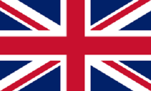

Unitarne państwo wyspiarskie w Europie Zachodniej. W skład Wielkiej Brytanii zalicza się Anglia, Walia i Szkocja położone na wyspie Wielka Brytania oraz Irlandia Północna leżąca w północnej części wyspy Irlandia. Na wyspie tej znajduje się jedyna granica lądowa Zjednoczonego Królestwa z innym państwem – Irlandią
Poza nią Wielka Brytania otoczona jest przez Ocean Atlantycki na zachodzie i północy, Morze Północne na wschodzie, kanał La Manche na południu i Morze Irlandzkie na zachodzie. Wielka Brytania posiada kilkanaście terytoriów zależnych, niewchodzących w skład Zjednoczonego Królestwa.
| Powierzchnia |
Ludność |
PKB / os |
Waluta |
| 244 820 km² |
66 796 800 os |
42 310 USD |
Funt |
Zobacz więcej!